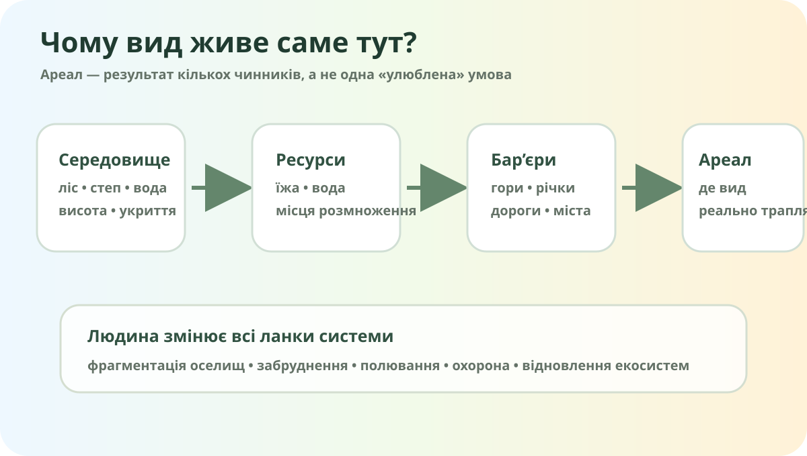

Чому рись не живе всюди?

Реальне фото рисі євразійської, Wikimedia Commons.

Спостереження ≠ ареал, але це доказ
OpenStreetMap допомагає описати рельєф, води, міста й транспортні бар’єри, але не показує саму фауну.
Порівняйте 4 середовища
Скільки даних про фауну реально є?
У звіті GBIF для України мобілізовано сотні тисяч записів про спостереження тварин. Для прикладу: птахи — понад 829 тис. записів, ссавці — понад 88 тис., комахи — понад 208 тис..
Методологічна пастка
Більше точок на карті ≠ автоматично більше тварин. Дані залежать від кількості спостерігачів, доступності території, сезону, помітності виду й методів збору.
Ареал змінюється, коли змінюється середовище

Кейс 1 — зубр
Великий лісовий травоїдний. Для стійкої популяції потрібні великі пов’язані оселища й можливість переміщення.

Кейс 2 — видра
Її поширення пов’язане з річковими й прибережними екосистемами, кормовою базою та якістю води.

Кейс 3 — вид-вселенець
Єнотоподібний собака походить зі Східної Азії й поширився далеко за межі природного ареалу.
Що треба забрати з уроку
1. Зональність
Полісся, лісостеп і степ мають різні набори оселищ, а отже різні комплекси тварин.
2. Азональні чинники
Річки, болота, гори, узбережжя та міські території створюють окремі екологічні ніші.
3. Людина
Фрагментація, забруднення й переслідування скорочують ареали; охорона й відновлення можуть їх розширювати.
Рись: ареал — це не просто «де намальована пляма»
Перегляньте короткий матеріал WWF-Україна про рись і випишіть два чинники, що обмежують її поширення.
WWF-Україна: рисьЯкщо відео/мультимедіа не завантажиться, текст і карта на сторінці достатні для виконання завдання.
Локальне дослідження
Знайдіть у назвах Вашої області 2–3 топоніми, пов’язані з тваринами: наприклад, Вовче, Лисе, Оріхів — але перевірте етимологію, бо схожість слова ще не є доказом походження назви.
Чому тваринний світ України має виразні просторові відмінності?
§34 + мініатлас 1 виду
Оберіть одну тварину України. Зробіть 1 слайд/сторінку: фото, ареал в Україні, тип оселища, 2 чинники поширення, 1 загроза, 1 надійне джерело. Окремо позначте: спостереження ≠ чисельність.
Електронний підручник / ВШО